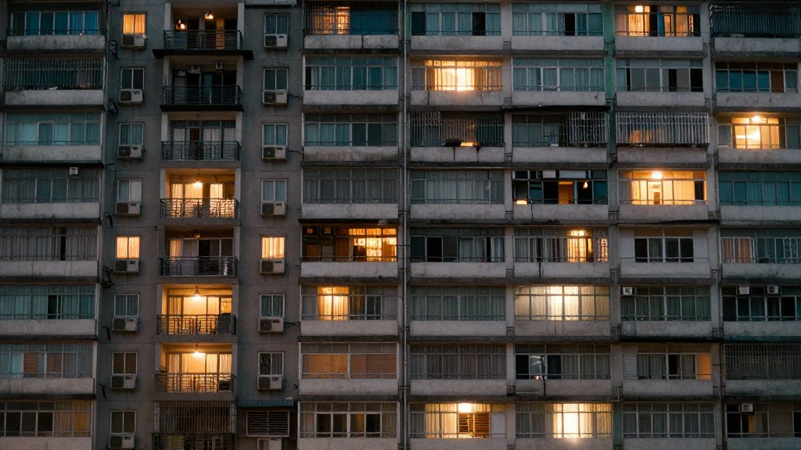
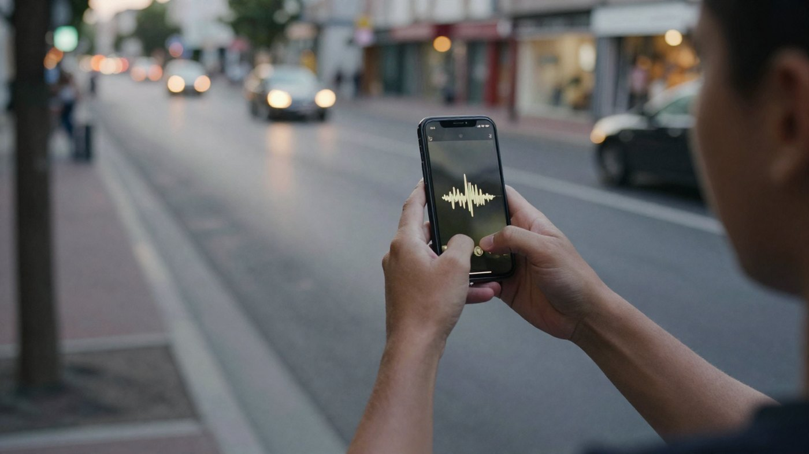
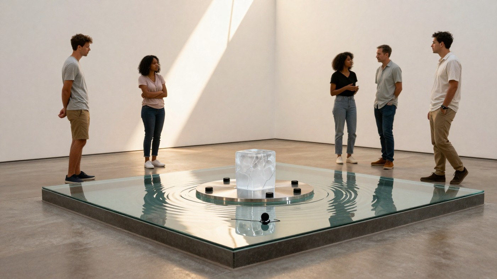
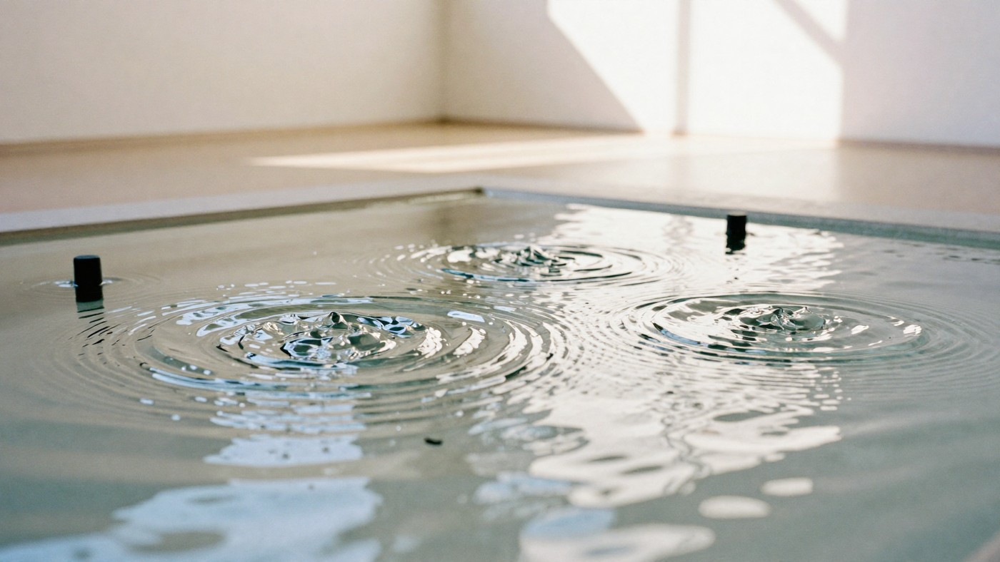
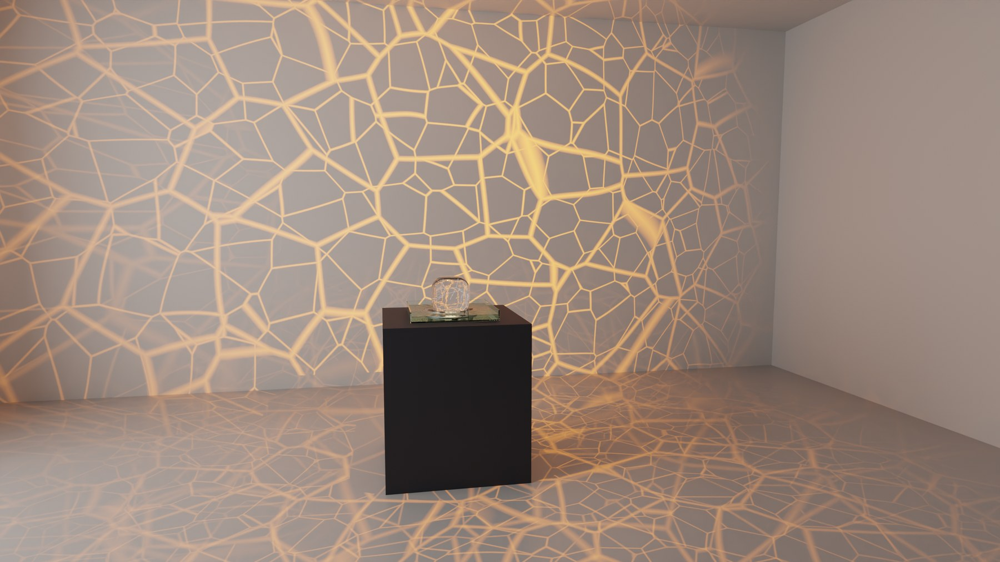

Proposal for Sound Scene 2027: Sounds of the City
Listening to the City Through a Melting Interface
Concept

In a city, we pass countless strangers every day. Even when we are only steps apart, our lives seem never to touch. A neighbor who lives next door, separated from us by a single wall, can be as much a stranger as anyone else, their life unrelated to ours. Compared with the closeness of neighborhoods in the past, neighbors in the modern city, however near they live, remain distant from one another.
We live in a city made up of countless people, yet in the middle of the crowd we may feel profoundly lonely. This is the urban experience that Echoes Across the Thaw explores: people who are physically close to one another, yet emotionally lonely and estranged.
Audience experience and participation
The most compelling intellectual tension of this installation lies in its refusal to reduce interaction to buttons, lights, and sounds. Instead, it establishes a rigorous yet poetic logic of material transduction.
Within an open glass vessel, the work constructs a miniature realm of phase transition. Above a shallow layer of water, a modestly scaled block of ice slowly melts, releasing droplets into the water below. Contact speakers positioned at the interface between ice and water translate environmental sounds from different corners of cities into mechanical vibrations.
Tech and implementation
As streetscapes, the low frequencies of traffic, and distant urban noises enter this physical interface, sound waves cease to exist merely as auditory phenomena in the air. They become Faraday waves on the water's surface. Shifting frequencies and amplitudes give rise to delicate, ever-changing standing-wave patterns. Refracted through light, these movements cast fluid caustic patterns across the exhibition space, surrounding walls, floors, and visitors.
Here, technology serves not as spectacle but as a precise system of coupling and sensing.
Soundscapes from the city, uploaded by different participants around the city. Each speaker represents an individual from a different corner of the city, or around the world.
Tech and implementation
Transmitting sound to the ice through our already built platform allows individuals to capture a snap of sound from their surroundings anywhere and "upload it to the ice," routing those audio signals directly to tactile speakers (exciters) positioned at the ice–water contact interface.
The urban soundscapes are not simply gathered passively. Participants contribute recordings through technologies and a dedicated platform developed specifically for the artwork. Participation extends beyond the exhibition itself: residents of cities around the world can connect remotely and contribute their surrounding soundscapes in real time.

Audience experience and participation
Meanwhile, visitors need neither speak nor touch the installation to participate. The subtle vibrations of the floor and air generated by walking, approaching, or passing by can disturb the water's equilibrium, allowing the presence of the body to become part of the ripples and the sound field.
At the center of the water, a microphone acts as a silent yet sensitive acoustic probe, continuously listening to and recording these convergences. Vibrations from distant cities, the microscopic sounds of melting ice and falling droplets, and the faint tremors left by passing visitors overlap within the water and are captured in real time.



Artistic statement
Contemporary cities present a striking contradiction. Technology connects distant places with unprecedented immediacy, yet those living closest to one another may remain profoundly estranged, much like a seemingly solid block of ice with its distinct crystalline boundaries.
Through the natural melting of ice, the installation offers a quiet yet profound reflection on contemporary urban estrangement. Melting does not signify disappearance. Rather, it becomes a metaphor for breaking the ice and coming together.
Within the city, we may appear to be separate, unrelated individuals, yet we remain intimately connected as parts of a larger whole. Whether in the frozen form of ice or the flowing form of water, we continue to resonate within the same system and the same passage of time.
Ice, ripples, and distant echoes
The work brings together two seemingly opposing conditions within a single transparent vessel: the irreversibility of time and the permeability of connection.
The melting ice marks a one-way passage of time. As technology advances and time unfolds, once-separated ice crystals eventually melt and merge into a continuous body of water. Meanwhile, urban sounds crossing geographical boundaries through the dedicated platform, together with live recordings captured by the underwater microphone, allow this transient process to be continuously translated, layered, and preserved.
The wholeness and density of the ice reflect the city’s physical aggregation, while its transparency, coldness, and internal fractures serve as metaphors for the invisible distance and quiet solitude between people—as well as the subtle traces left by their mutual influence.
Emerging across the water below, these ripples symbolize both estrangement and pathways of connection. Each incoming sound subtly alters the structure of the ice and the pattern of the waves, and those physical shifts, in turn, reshape how subsequent sounds travel through the medium.
Tech and implementation
At the intersection of art and technology, technical systems move beyond mere spectacle to become a medium that translates invisible signals into embodied sensory experience. Through the precise coupling of a networked web and mobile platform, tactile vibration transducers, and underwater acoustic sensing, this work transforms cross-geographic urban soundscapes, refracted light, and the subtle footsteps of on-site visitors into tangible physical ripples between ice and water—symbolizing the invisible threads of sound and the unheard voices within a city.
This is the essence of a city, and it echoes the idea that every member of the city has the right to make a sound, while the city never stops listening and continues to evolve.